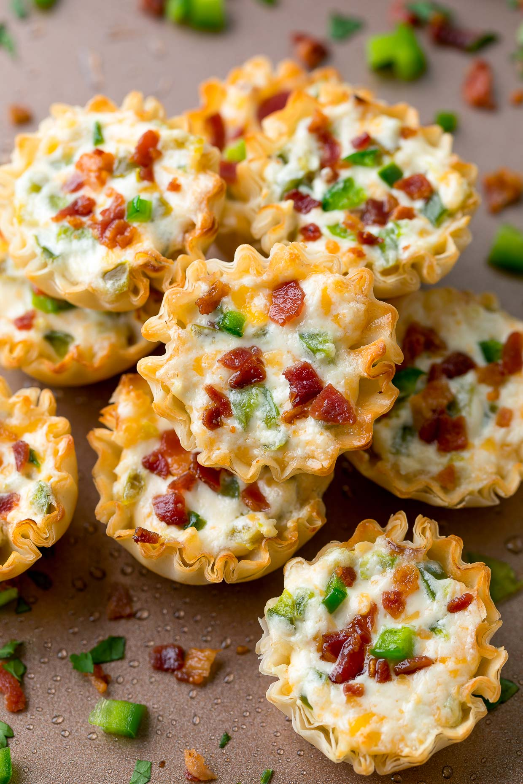

Jalapeno Popper Cups

Creamy, spicy appetizer you'll want to eat right away!
Ingredients:
- 12 mini phyllo tart shells
- 4 ounces cream cheese, soft
- half cup shredded cheddar cheese
- 2 jalapeno peppers, seeded and chopped
- 1 tablespoon hot pepper sauce
- bacon bits
Directions
- Preheat an oven to 350 degrees F. Place phyllo cups onto a baking sheet.
- Mix cream cheese, cheddar cheese, jalapenos, and hot sauce in a bowl. Spoon mixture into phyllo cups. Sprinkle bacon bits on top.
- Bake in preheated oven until golden brown, about 15-20 minutes.